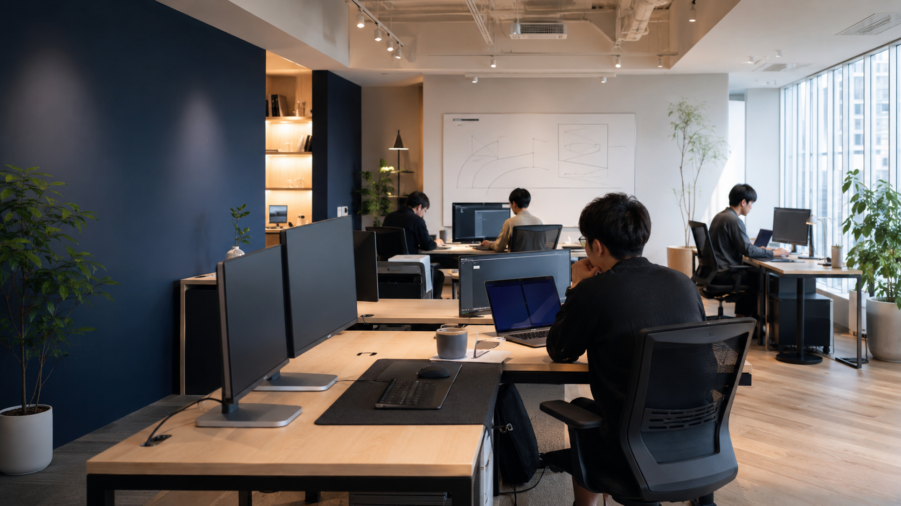
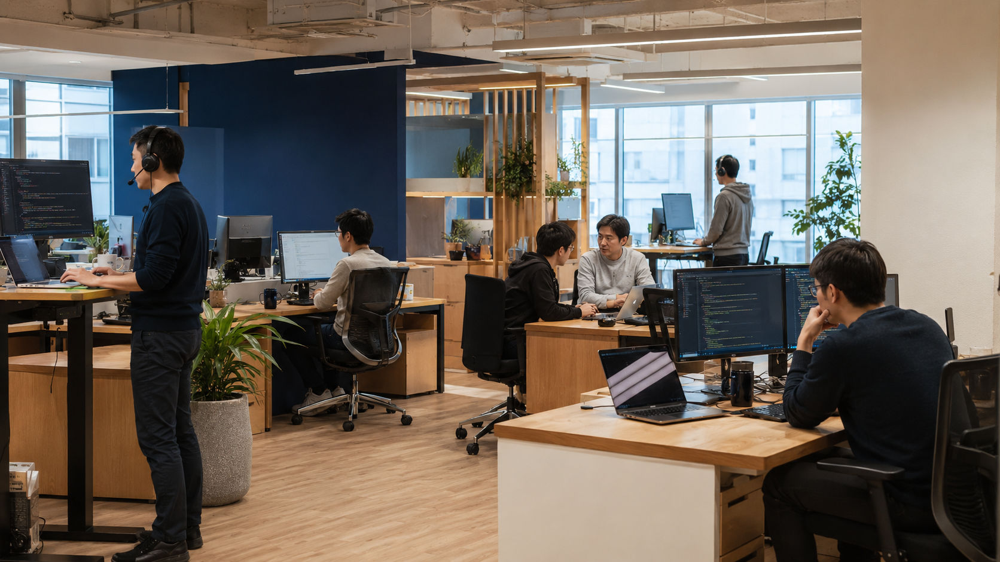
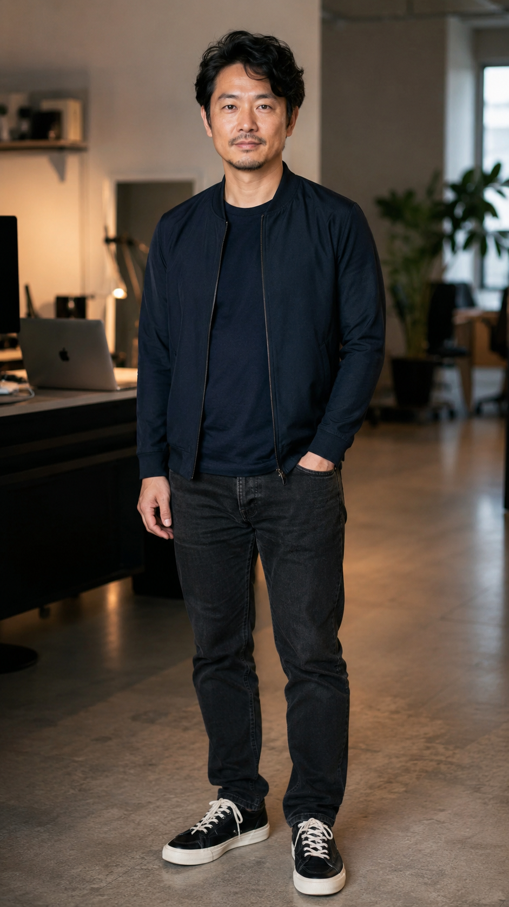
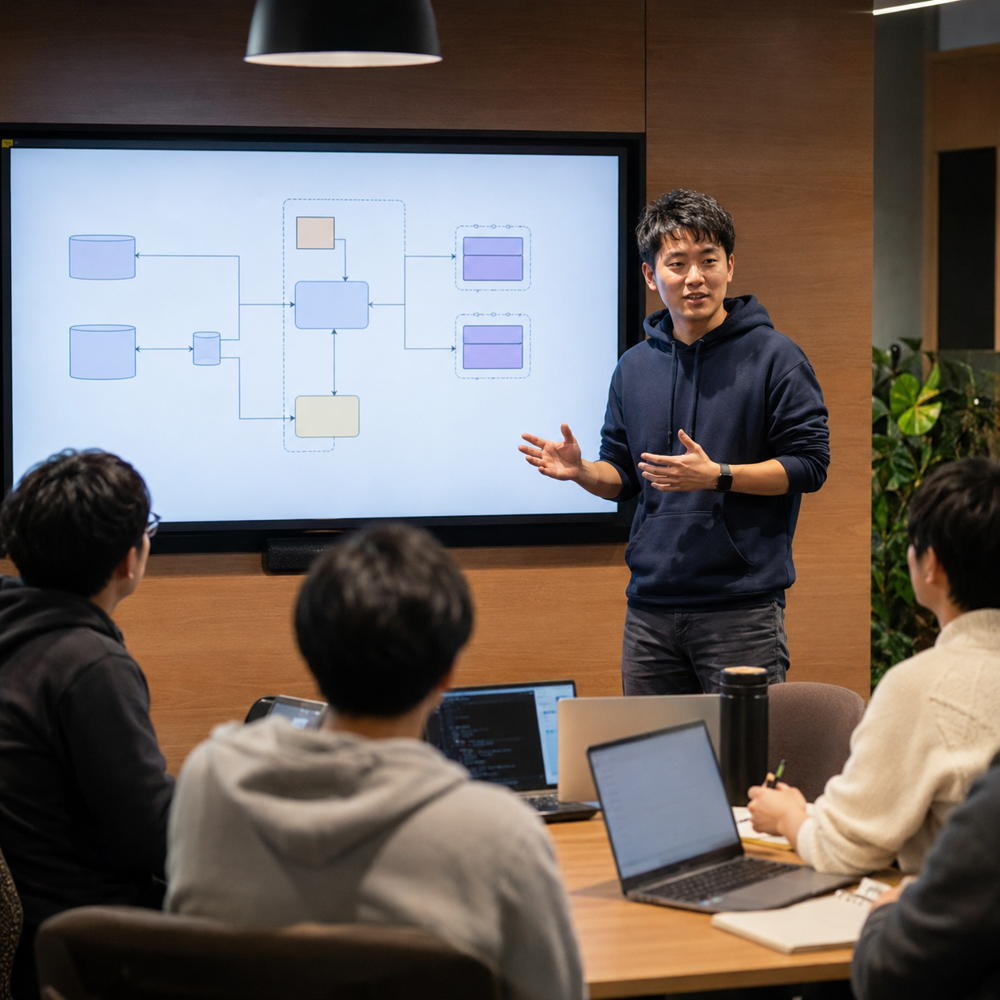

あなたのコードが、
直接プロダクトを
動かす場所がある。
株式会社テックブリッジは、フルリモート・最新スタック・少数精鋭のソフトウェア開発会社です。
「言われた通りに実装するだけ」の毎日に疲れたなら、一度だけ話を聞いてください。
Our Mission
エンジニアが輝ける場所を、
エンジニアが作る。
テックブリッジは2015年、「エンジニアが本当に力を発揮できる環境をつくりたい」という思いで 元エンジニアの山田が立ち上げた会社です。大きな会社で歯車になる必要はない。 自分のコードが直接プロダクトを変えていく。そういう仕事の仕方を、当たり前にしたいと考えています。
こんな状況に、
心当たりはありませんか？
新技術に触れられない
レガシーシステムの保守が続いて、ReactもGoもDockerも、業務で使う機会が来ない。 技術記事を読んでいるだけで、手を動かせていない。
裁量が与えられない
技術選定は上が決める。アーキテクチャは前任者のまま。「こうした方がいい」と思っても、通る場がない。 自分はただ、仕様書を実装しているだけ。
残業で、勉強できない
帰宅するとエネルギーが残っていない。勉強しようと思っても、開けないまま積まれていく本。 このままでいいのか、という漠然とした不安。
5年後が、見えない
このまま続けたら、自分は何が得意なエンジニアになっているのか。 転職したい気持ちはある。でも、「どこに」行けばいいのかわからない。
その悩み、
実は環境が原因です。
テックブリッジには、それを
丸ごと解決できる仕組みがあります。

エンジニアが本当に
輝ける場所が、ここにある。
テックブリッジは「エンジニアのために作られた会社」です。 少数精鋭だからこそ、1人ひとりの影響範囲が広い。 最新スタックを使うからこそ、毎日が学びになる。 代表の山田は、今も現場でコードを書くエンジニアです。 経営者が、あなたの気持ちを誰よりも理解しています。
まず話を聞いてみる（完全無料）テックブリッジが選ばれる、
3つの理由
出社不要。毎日、最前線を走る。
完全フルリモート（出社は月1〜2回）。React / TypeScript・Go・AWS・Kubernetes。 エンジニアが「使いたい」と思ってきた技術スタックを、業務で毎日触り続けられます。
1人の影響範囲が、桁違いに広い。
エンジニア32名の少数精鋭チーム。技術選定・アーキテクチャ設計・プロダクトの方向性。 入社初日から、その議論の場にいられます。「指示を待つ仕事」は、ここにはありません。
学ぶことが、仕事になる。
月次技術勉強会（業務時間内）・書籍購入補助年3万円・個人学習の推奨。 「勉強は自分の時間でやるもの」という文化は、ここにはありません。成長することが、仕事の一部です。
仕事を知る
現在募集しているポジションです。
「完璧に当てはまらなくても」相談できます。
Backend Engineer
バックエンドエンジニア
Go / Node.js を中心に、APIサーバー・マイクロサービスの設計・実装・運用を担当。技術選定の議論に初日から参加できます。
Frontend Engineer
フロントエンドエンジニア
React / TypeScript でプロダクトのUI全体を担当。UXの意思決定・コンポーネント設計・パフォーマンス改善まで幅広く関わります。
Full-Stack Engineer
フルスタックエンジニア
フロントからインフラまで横断的に担当。小さなチームだからこそ、プロダクト全体のオーナーシップを持てるポジションです。
「どのポジションか迷っている」場合も、
カジュアル面談でお話しできます。
技術と、働き方
「どんな技術を使うのか」「実際どう働くのか」。
判断材料はすべて、ここに書きました。
フロントエンド
バックエンド
インフラ
ツール・その他
| 勤務形態 | フルリモート（出社は月1〜2回、任意） |
|---|---|
| 勤務時間 | フレックスタイム制（コアタイム 11:00〜16:00） |
| 年収 | 450万〜800万円（月給35万〜65万、賞与年2回） ※ 経験・スキルによる |
| 雇用形態 | 正社員（無期雇用） |
| 試用期間 | 3ヶ月（条件同一） |
| 休日 | 完全週休2日（土日）、祝日、年次有給休暇 |
| 書籍補助 | 年3万円（申請不要、領収書提出のみ） |
|---|---|
| 勉強会 | 月次技術勉強会（業務時間内。参加推奨） |
| 機器 | MacBook Pro 支給（スペック相談可） |
| 社会保険 | 健康保険・厚生年金・雇用保険・労災保険 |
| 副業 | 可（月20時間以内・事前申請。OSS活動は積極推奨） |
数字が証明する、
テックブリッジの実力
（業界平均 15% の 1/3）
（2025年度社内調査）
（2015年創業）
関東部門 TOP50 🏅 2023年 DX推進支援事業 経済産業省認定

先輩エンジニアたちの、
リアルな声
転職して1年で技術力が3倍になった気がします。 GoとAWSを毎日使うようになって、コードを書くのが純粋に楽しくなりました。 前職の自分には戻れないです。
自分の提案がすぐ採用されるのが嬉しい。 先週出したアーキテクチャの改善案が、今週もうコードに入っていました。 「ちゃんと聞いてもらえる」って、これほど大事なことだったのかと。
残業はほぼゼロになって、退勤後に勉強する気力が戻ってきました。 OSS活動も始められて、エンジニアとして生き返った感覚です。 今が一番、仕事が好きかもしれない。
入社してはじめて「自分がインフラを設計している」という実感を持てました。 女性エンジニアが少ない業界ですが、ここでは当たり前に意見を言える。 技術で評価してもらえる環境って、こういうことなんだと思いました。

山田 健太（やまだ けんた）
代表取締役CEO — 元大手SIer・10年エンジニア歴
現在もコードを書くプレイングマネージャー
設立2015年。累計150社以上のDX・プロダクト開発を支援。
2024年 日経XTECH「働きがいのあるIT企業ランキング」関東TOP50選出。

環境を知る
制度や福利厚生ではなく、「どういう空気の会社か」を
伝えたくて書きました。
意見が、翌週には動いている。
週次のチームMTGで「こうした方がいい」と言ったことが、翌週には実装されている。 そういう会社です。稟議も承認フローも、ほとんどありません。
勉強することを、応援している。
書籍補助年3万円、月次勉強会（業務時間内）、登壇・OSS活動の奨励。 「自分の時間で勉強しろ」という文化は、ここにはありません。
コードレビューが、会話になっている。
PRのレビューコメントは、指摘ではなく対話です。「なぜそう書いたか」「他にどんな選択肢があるか」を一緒に考える文化が、チームを育てます。
フルリモートでも、孤独じゃない。
Slackの雑談チャンネルは毎日にぎやか。月次の全社オンラインイベント、チームランチ（任意）、気軽に話しかけられる空気があります。
採用の流れ（最短2週間）
難しいことは何もありません。まず話すだけでいいです。
カジュアル面談
（30分）
オンライン完結。スキルも転職意向も問いません。会社の雰囲気を知るためだけの場です。
🎁 参加者全員にAmazonギフト券1,000円
1次選考
（技術課題）
GitHubへの課題提出 + オンラインコードレビュー面談（60分）。スキルより思考プロセスを見ます。
最終面談
（60分）
代表 + チームメンバーとの対話型面談。カルチャーフィットと
相互理解を確認します。
内定・
オファー提示
最短5営業日でご連絡。給与は経験・スキルを考慮した個別提示です。
🎁 通過者に技術書3,000円相当プレゼント
今回の募集は、
定員に達し次第、採用を締め切ります。
少数精鋭チームの品質を守るため、一度に多くは採用しません。
よくあるご質問
もちろんです。カジュアル面談はキャリア相談の場です。転職時期は問いません。「今の環境がベストか確かめたい」「他社のエンジニア文化を知りたい」という方も、ぜひお気軽にどうぞ。
スキルより成長意欲を重視しています。開発経験2年以上かつ「もっと技術を深めたい」という気持ちがある方であれば、現在のスキルセットは問いません。選考では、解法の正解よりも思考プロセスを見ています。
応募・面談の事実は外部に一切開示しません。秘密は厳守します。面談はすべてオンライン対応可能ですので、在職中の方もご安心ください。
月次の全社オンラインイベント、チーム別のWeekly MTG、Slackでの雑談チャンネルなど、コミュニケーション文化を大切にしています。「テキストで話しかけたら即レスが返ってくる」環境です。
月20時間以内・事前申請の条件付きで可能です。OSS活動は積極的に推奨しています。むしろ、社外でアウトプットしているエンジニアを歓迎します。
試用期間3ヶ月も、給与・待遇は内定条件と完全に同一です。「試用期間中は低め」という文化は、ここにはありません。
GitHubへの提出形式で、実務に近い小さな設計・実装課題です。特定の正解を求めるものではなく、「なぜその設計にしたか」という思考プロセスを重視しています。所要時間は3〜5時間程度を想定しています。
入社時にMacBook Proを支給します（スペックは相談可能）。モニターや周辺機器については、必要に応じて会社負担で手配できます。通信費の補助については現在検討中です。カジュアル面談でお気軽にご確認ください。
入社後も、ひとりにしません。
新しい環境で最初の3ヶ月は、誰でも不安があります。だから、仕組みとして支えます。
🔒 3ヶ月フォローアップ保証
入社後3ヶ月間は専任メンターが週1で1on1を実施。技術・カルチャー・人間関係。すべてのオンボーディングをサポートします。「こんなはずじゃなかった」を、なくすための仕組みです。
👥 メンター制度
先輩エンジニアとのペアプログラミング週2回、コードレビュー文化で自然にスキルアップ。孤独な独学ではなく、チームで育てる文化があります。「壁にぶつかったら気軽に聞ける」環境を大切にしています。
まずは資料から知りたい方へ
テックブリッジの事業・技術・チーム・文化をまとめた会社紹介資料をご用意しています。面談の前に雰囲気を知りたい方は、ぜひご覧ください。
まず、話してみてください。
それだけでいいです。
- ✓ 無料・30分・オンラインで完結します
- ✓ 面談に来てくれた方全員にAmazonギフト券1,000円をお送りします
- ✓ 転職意向は問いません。在職中も、秘密もしっかり守ります。
申し込みから48時間以内にご連絡します。
個人情報の取扱いについてはプライバシーポリシーをご確認ください。